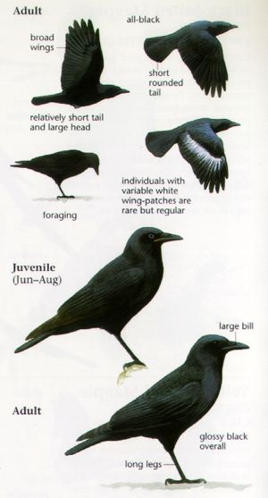

The
American Crow(Scientific Name = Corvus brachyrhynchos) is observed to be a large
passerine(=sparrow-like bird) from the family of birds which are frequently
sighted in North America. They are compared to Carrion Crow and Hooded Crow because of
similarities in size and body structure, but they are radically different in terms of
voice and general appearance.
History
German naturalist Christian Ludwig Brehm initially described this
species of the crow in 1822. Its scientific name breaks down to brachy- which
means short and -rhynchos which means billed. However, the International
Ornithologists Union later formally assigned the name.
Body Structure

Differences in an American Crow.
An average American crow measures between 40 and 50 cm in length overall, with the tail
covering around 40-50% of that length. Among these dimensions, the wing span is 85 to
100 cm, the wing chord (=measurement of the wing when bent at 90 degrees) is
between 24.5 and 33 cm, and the bill (=beak) is between 3 and 5.5 cm
(varies according to location). Additionally, the length of their tail spans
from 13.5 to 19 cm, and its tarsus
(=a cluster of seven bones in each foot) measures between 2.2 and 2.6 inches.
Its entire body, including its legs and bill, is completely black. Even though the
typical weight is between 300 and 600 grammes, male crows are larger than their female
counterparts. They typically make the sound "CaaW." The birds make this sound while
cocking their heads up and down. Additionally, American crows can replicate a variety of
animal sounds, including those of other birds like barred owls, and they have a wide
spectrum of vocalizations.
This is the callings of an American Crow.
Behaviour
American Crows are highly social birds and are frequently seen as family-oriented
creatures. This can be said since the entire family contributes to the upbringing of
their young ones. They are praised for their brilliance as they collaborate to come up
with diverse solutions to several difficulties. Additionally, they cooperate to harass
or scare away predators, a practice known as mobbing. Since the brain-weight-to-body
ratio of American Crows is similar to that of a human, some studies concluded that crows
are self-aware and that young crows take their time learning from understanding parents.
Same as the neocortex(=a part of the human brain which is involved in higher-order brain functions)
in humans, these crows have a distinct region of the brain that is equally
sophisticated.
However, due to difficulty in catching them, it is challenging to examine their other
behaviours, such as daily routine, migration, age at which they begin bleeding, nestling
development etc.
Diet
American crows are naturally omnivorous, meaning they consume both plants and animals.
They eat primarily invertebrates(=animals without a backbone or spine),
carrion(=decaying animal meat, including that of humans), fruits, nuts, eggs,
nestlings, and dead fish found by the shore as well as a variety of grains. They hunt
mice, rabbits, frogs, and other small animals in addition to all of the above. However,
during Winter and Autumn, they prefer to eat nuts and acorns. Lastly, they are
occasionally sought at bird feeders(=devices placed outdoors to supply bird food).
Reproduction
American Crows are observed to be monogamous(=having only one partner during a lifetime or having only one partner at one
time). These species produce big groups of up to 15 members during breeding seasons(=the time of year in which the species pair for the purpose of sexual
reproduction)
and they stay together for a long period of time. Before beginning to breed among
themselves, it is believed that the offspring dwell with their family to help them raise
new offspring next year. Although it takes American Crows two years to reach
reproductive age, many of them do not leave the nest for four to five years.
Many birds start to incubate eggs at the beginning of April. American crows use sticks
to build their enormous, bulky nests, which are typically found in trees but can also
occasionally be found in large bushes or on the ground(very rarely). According
to observation, they construct their nests on huge conifers, which are collections of
seed plants, or oaks, which are trees or shrubs in the Fagus family. Later on, 3 to 6
eggs are laid, which are then incubated(=the process in which an egg starts the early stage of development of a
multicellular organism)
for 18 days. The transitional period between hatching or birth and learning to fly lasts
36 days for the young ones. Predation
(=a biological interaction in which one organism kills and eats another organism)
by snacks, raccoons, ravens, or domestic cats may happen at the nest during this time.
Predation
(=a biological interaction in which one organism kills and eats another organism)
by snacks, raccoons, ravens, or domestic cats may happen at the nest during this time.
Although adults are less likely to be eaten, they still run the risk of being severely
attacked by eagles, great-horned owls, red-tailed hawks, and peregrine falcons. In
addition, they occasionally run the risk of being attacked by bobcats, carrion owls, and
coyotes (=species of canine) while they are uncautious.